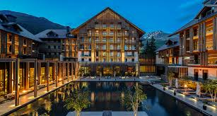

 The Chedi Andermatt is a five-star - deluxe hotel in Andermatt , which opened in December, 2013. The hotel is part of The Leading Hotels of the World , a worldwide alliance of luxury hotels, resorts and spas . As part of the tourism project Andermatt Swiss Alps by the Egyptian multi-billionaire and investor Samih Sawiris , The Chedi Andermatt became the first hotel to be realized. The groundbreaking ceremony took place on September 26, 2009, and on August 31, 2010, a foundation stone was laid on the building site as part of a ceremony. In December 2013, the hotel went into operation. The hotel has 123 guest rooms and suites. The hotel complex also includes 119 private real estate units: 106 apartments , 13 lofts and penthouses. The hotel has a Japanese restaurant , a restaurant serving Asian and European dishes, and a 2400 square meter spa and wellness area.
Switzerland Page